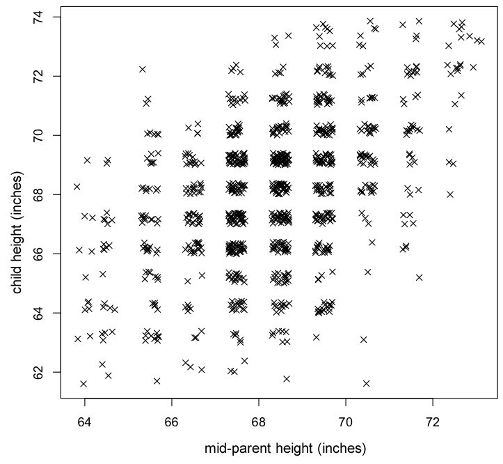

We now present an application of the bivariate normal distribution.
Example: Heights of parents and children
In the late 19th century, Francis Galton analysed data about the relationship between the heights of children to those of their parents. This was based on measurements of the adult heights of 928 children and the average heights of their parents, with all measurements in inches. (Female heights were multiplied by 1.08 to compensate for sex differences.)
The data are summarised by the jittered scatterplot below. (Heights were rounded so the crosses have been randomly moved to separate coinciding ones.)

Both marginal distributions seem reasonably symmetric and normal, so a bivariate normal distribution was fitted to the data, with its parameters estimated by the sample means and variances of the two variables and the sample correlation coefficient.
\[ (C, P) \sim \NormalDistn(\mu_C = 68.09, \mu_P = 68.31, \sigma_C^2 = 6.340, \sigma_P^2 = 3.195, \rho = 0.459 \]This joint probability density function for this distribution is shown below.
Assuming that this bivariate normal distribution is accurate,
The probability of a child being taller than 71 inches is found from the variable's marginal distribution
\[ C \;\; \sim \; \; \NormalDistn\left(\mu_C = 68.09, \;\;\sigma_C^2 = 6.340\right) \]From Excel, this is
\[ P(C \gt 71) \;\;=\;\; 0.124 \]The conditional distribution of C, given that P=71 is normal with mean
\[ \mu_{C|P=71} = \mu_C + \frac{\sigma_C}{\sigma_P} \rho \left(71 - \mu_p\right) = 69.83 \]and variance
\[ \sigma^2_{C|P=71} = \left(1 - \rho^2\right) \sigma_C^2 = 5.004 \]The first of these is the expected child's height if the parents' mid-height is 71 inches. The probability that the child's height is over 71 inches is found from the \(\NormalDistn(69.83, 5.004)\) distribution. From Excel, this is
\[ P(C \gt 71 \mid P = 71) \;\;=\;\; 0.300 \]